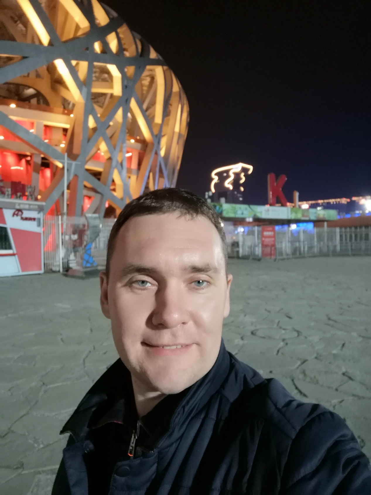
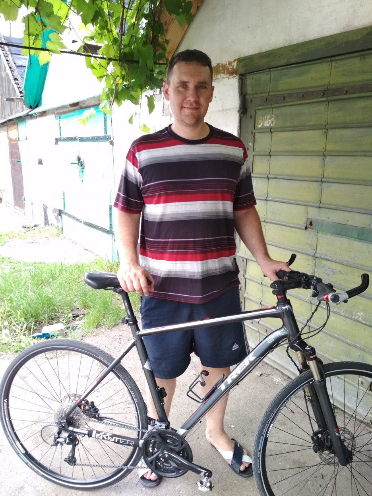
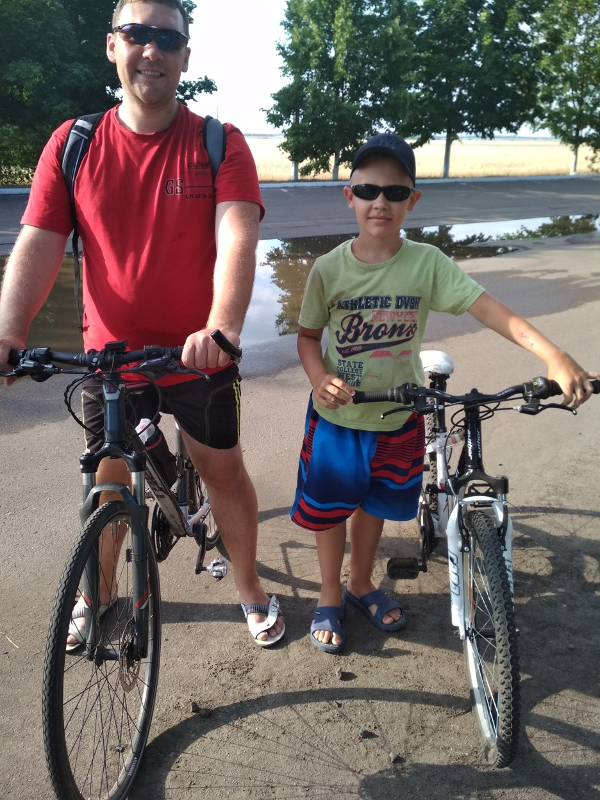

Max Lancaster
Про марс
Про птичек
Личные данные
- Год рождения: 1978
- Пол: мужской
- Город рождения: Родинское
-
Адрес: Донецкая обл.
г.Покровск мк-рн Лазурный xx/xx
Образование
- Родинская школа №8
- ПТУ №80 г Родинское
- Донецкий горно-экономический техникум
- Донецкий Национальный технический университет
Новости
Президент Украины Владимир Зеленский заявил, что 29 декабря состоится обмен пленных.
Мэр Киева Виталий Кличко открыл 28 декабря Шулявский мост.
На официальное мероприятие городской голова прибыл на квадроцикле в костюме Санта Клауса.
Немного фото


